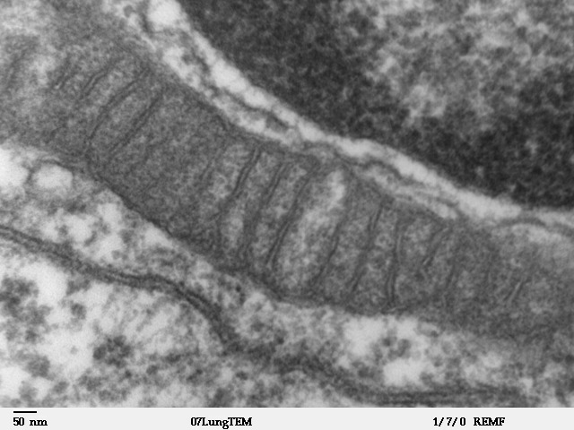
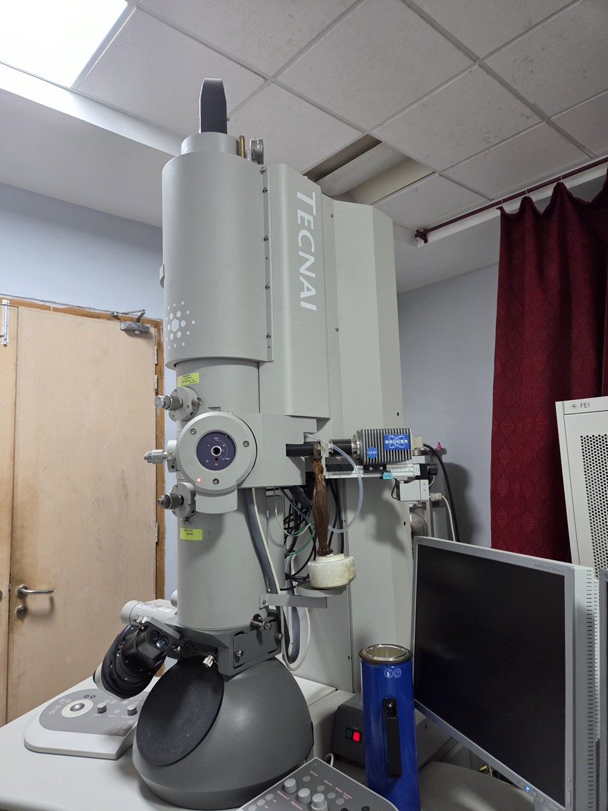

When electrons do the imaging.
Understand SEM, TEM, signals, lenses, and why shorter wavelengths reveal smaller structure.
Explore electron learning path
Understand SEM, TEM, signals, lenses, and why shorter wavelengths reveal smaller structure.
Explore electron learning path| Question | SEM | Conventional TEM |
|---|---|---|
| How is the image made? | A focused probe is rastered. Detector signal is assigned to each scan position. | Electrons illuminate a thin region. Objective and projector lenses form an image from transmitted waves. |
| What is useful? | Surface morphology, fracture features, particle shape; BSE and X-rays add composition information. | Internal structure, defects, crystallography and thin biological sections. Diffraction patterns also reveal ordering. |
| What limits interpretation? | Charging, coatings, interaction volume, topography and detector geometry. | Preparation artefacts, overlapping structure in projection, multiple scattering, diffraction, phase and beam damage. |
STEM combines a scanned probe with transmitted-electron detection. SEM and TEM describe imaging arrangements, not a universal ranking of image quality.
Use the existing electron workbench to switch SE, BSE and transmitted-electron paths. Adjust accelerating voltage to calculate wavelength. The schematic does not simulate a material-specific interaction volume.
Explore all five detected signals ↓
Pollen grains show surface relief, spines and texture. SEM assigns electron-detector intensity to each beam position. This source does not identify the detector channel; it cannot be assumed to be SE or BSE.
Notice: Bright edges suggest strong geometry-dependent contrast, but brightness alone cannot establish composition or surface height. The image is grayscale, not an optical-colour measurement.
Compare SEM detector signals →Select a component · Tab + Enter also works. Original schematic, not to scale.
Lenses form a probe and scan coils move it across the specimen. Each pixel records detector signal at that probe position.
V is the accelerating potential in volts; eV in the first equation is a product giving energy in joules. An electron accelerated through 30 kV has kinetic energy 30 keV. h is Planck’s constant, mₑ the electron rest mass, e the positive elementary charge and c the speed of light. The relativistic equation is used in the workbench. The approximation becomes less accurate at high voltage.
At 30 kV, λ ≈ 6.98 pm. This is a wavelength, not a promised image resolution: source size, lens aberrations, dose, drift and specimen scattering remain important.
A cathode supplies electrons, an extraction field draws them out, and an anode accelerates them. The effective source can be a real crossover or a virtual origin; it is not simply the physical tip diameter.
Heating W or LaB₆ gives some electrons enough energy to escape over the work-function barrier. Generally a larger effective source and greater energy spread than field emission.
J = ART² exp[−φ/(kBT)]. J: current density (A m⁻²); T: K; AR: effective Richardson constant (A m⁻² K⁻²). Use φ and kBT in the same energy units. Lower work function helps emission; heat and vacuum requirements depend on cathode material.
A strong field at a sharp tip makes the surface barrier thin enough for quantum tunnelling. Small virtual source, high brightness and low energy spread; surface contamination demands very good vacuum and periodic cleaning.
Fowler–Nordheim scaling: J ∝ (F²/φ) exp[−BFNφ3/2/F]. F is local electric field (V m⁻¹); BFN depends on the chosen units. This is a qualitative scaling, not a calibrated emitter-current calculation.
Field-assisted thermionic emission from a heated, typically ZrO-coated W tip. Often called a Schottky FEG, but its operating principle differs from cold tunnelling emission. Offers useful current and stability.
Δφ = √[e³F/(4πε₀)] in joules; φeff = φ − Δφ. Divide Δφ by e to express it in eV. ε₀ is vacuum permittivity and F is in V m⁻¹. The lowered barrier increases thermal emission.
Brightness β is current per area per solid angle (A m⁻² sr⁻¹); Ib is beam current (A), α the small convergence semi-angle (rad), d the probe diameter (m). Compare sources at the same beam energy. High current alone does not mean high brightness. dv is effective source diameter and M > 1 is the demagnification factor.
Thermionic W generally has the largest effective source and broadest energy distribution; cold FEG generally has the smallest source and narrowest distribution, with Schottky intermediate. LaB₆ improves on W in useful brightness. Actual values vary with operating conditions; lower ΔE reduces chromatic blur, especially at low landing energy.
The Lorentz force bends moving electrons. An axially symmetric magnetic lens focuses the beam and also rotates its image. Condenser and objective lenses control illumination and image/probe formation.
Electric fields between apertured electrodes change electron speed and trajectory. An einzel lens uses equal entrance/exit potentials: the beam can be focused with no net change in final kinetic energy.
F = q(E + v × B), with q = −e for electrons. Electric field E is in V m⁻¹, magnetic field B in tesla, v in m s⁻¹, force F in newtons. A magnetic field alone does no work. In an ideal paraxial description, 1/p + 1/qᵢ = 1/f, where p, qᵢ and f are object distance, image distance and focal length in consistent length units. Real field distributions and aberrations require electron-optical modelling.
A narrow convergence cone reduces lens aberrations but increases diffraction broadening. Open the cone and find the compromise. Colour-coded curves show the competing contributions.
Orange: spherical · purple: chromatic · cyan: diffraction · grey: source · pale yellow: combined.
We use the Lecture 5 pp. 24–30 probe-size conventions: α in radians; Cs = Cc = 2 mm; E₀ = 30,000 eV; ΔE = 0.7 eV; dg = 1 nm. These are fixed illustrative parameters, not a specified instrument. All lengths are converted to nm before combination.
The 0.61 term is a Rayleigh-based effective width, not the full Airy-disk diameter. Numerical coefficients depend on focus and width convention. Quadrature is an engineering approximation, not a full coherent wave-optics PSF calculation. Source demagnification is fixed; current, drift and specimen interaction volume are not simulated. At fixed brightness and source-image diameter, increasing α admits more current approximately as α².
Outer rays of an uncorrected rotationally symmetric lens focus differently from near-axis rays. The blur grows rapidly with α. Multipole correctors can compensate it.
Electrons of different energies focus at different planes. Source energy spread, voltage instability and specimen energy losses can contribute.
Unequal focusing in perpendicular directions produces an elongated spot that changes orientation through focus. Stigmators compensate lens or aperture asymmetry.
Astigmatism is assumed corrected in the experiment. Diffraction is a wave effect, not a fabrication defect in the lens.
Elastic scattering changes direction with negligible energy loss in the usual heavy-atom approximation. Inelastic scattering transfers energy to electronic excitations, ionization, collective excitations or heat. Both affect what reaches a detector.
SE: low-energy electrons (conventionally below 50 eV) generated by inelastic interactions. Surface escape and detector geometry make edges and tilted regions prominent; brightness is not a direct height measurement.
For a characteristic X-ray, hν equals the energy difference between the two electronic states involved in relaxation. For Auger emission, Ekin is approximately the initial vacancy binding energy minus the binding energies of the two participating outer states, with solid-state and work-function corrections as needed.
SE and Auger electrons are surface-sensitive because of limited escape lengths. BSE and X-rays can sample deeper volumes; their depths depend on material, beam energy and geometry. There is no single universal sampling depth. EDS detects X-rays from electron bombardment; XPS instead uses incident X-rays and measures photoelectrons.
Increase the thickness of a fixed synthetic thin foil. A matrix and more strongly scattering inclusions attenuate the accepted bright-field channel by different amounts. Compare the image with the beam path.

A thin section of mammalian lung reveals a mitochondrion and its internal membrane folds (cristae), imaged using a JEOL 100CX TEM. Transmitted electrons carry information through the section, unlike SEM surface imaging.
Notice: Follow the internal folds and the original 50 nm scale bar. Contrast depends on preparation and accepted scattered waves; the source does not specify staining or aperture conditions. Darkness is not a calibrated density measurement.
Try thickness and transmission →Select a component · Tab + Enter also works. Original schematic, not to scale.
The source supplies electrons. Accelerating voltage sets their wavelength, but wavelength alone does not determine resolution.
t is thickness in nm. Effective attenuation coefficients are μmatrix = 1/120 nm⁻¹ and μinclusion = 2/120 nm⁻¹. They represent removal from the accepted imaging channel, not absorption of every missing electron. At a fixed composition and aperture, μ can be written as density × an effective mass scattering coefficient; both mass density and thickness can affect contrast.
This deterministic, single-channel exponential model uses invented coefficients for teaching, not measured material data. It ignores multiple-scattering redistribution, detector noise and transfer functions. Real TEM also has diffraction contrast, interference/phase contrast, defocus, aperture effects and energy losses: darker does not uniquely mean thicker or denser. High-resolution lattice contrast cannot be predicted by this model.
SEM: How did a fracture propagate? What shapes are the particles? BSE/EDS: are regions compositionally different? TEM: where are defects, interfaces or internal structures? Electron diffraction: what crystalline order is present?
Vacuum and preparation can alter specimens. Insulators may charge; coating can obscure fine features. Electrons can cause radiolysis, heating or knock-on damage. Thin foils give projections, not automatic 3D reconstructions. Higher voltage is not always the best choice.

All diagrams and calculated images are original educational illustrations. The three credited real images on this page are stored locally. See full image provenance. No model here predicts a particular instrument’s resolution.
Explore the original scan-geometry activity, then examine the 2021 and 2026 research findings and their limitations.


.jpg){kind=link}